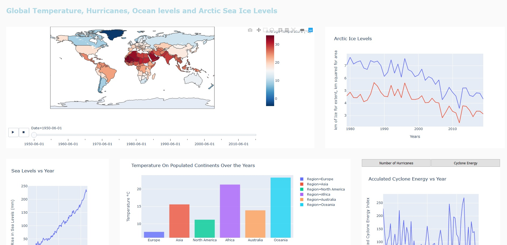
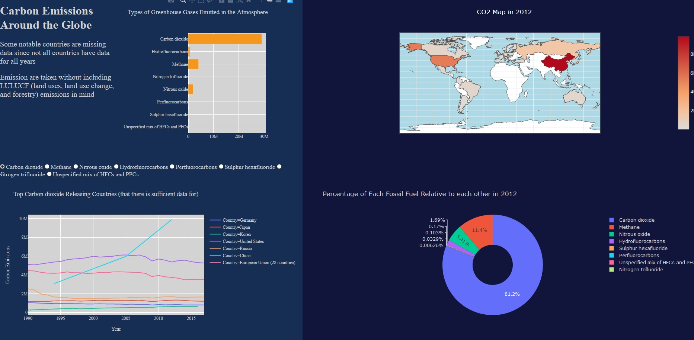
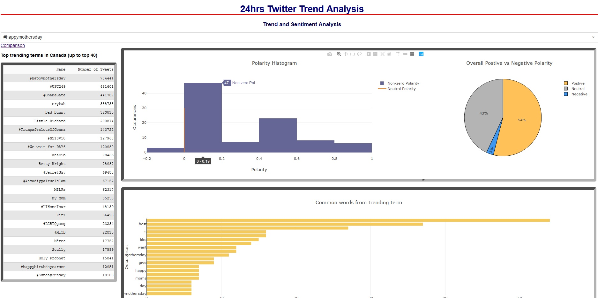
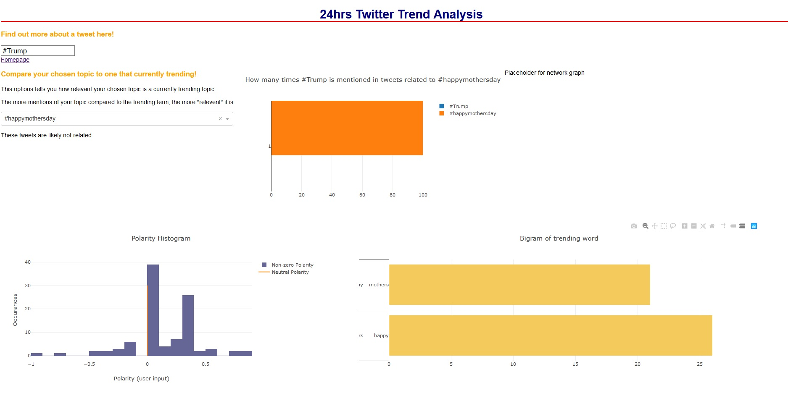

As the title describes, an interactive COVID dashboard which tracks cases, deaths for each country. First page shows stats for each country while the second page shows global conditions, with an adjustable map bubble map.
The data used comes from OWID (Our World in Data). The source can be found here.
This dashboard examines the relationships between time, and various climate change related data such as hurricane strength, arctic ice and sea levels, and temperature. Includes two small animations and is displayed in a clean, clear and simple format.
Data comes from a wide range of data. They are the United States Environmental Protection Agency for hurricane data, Berkeley Earth for temperature information for each country in each year, WorldData.info for continental data (note that they did not have weather stations in the South Americas), NASA for arctic ice levels and sea levels. Links to them are as followed: USEPA, Berkeley Earth/Kaggle Competition, WorldData.info, NASA
Meant to show a different colour scheem than what I generally do (dark theme or white). The contrast between colours probably work best in a more interactive display such as this one. The dash example has one side where there is an input and the other side with the output.
Data source can be found here.
Twitter, Sentimental Analysis
My first uses of Dash and consists of interacting with Twitter using the Twitter API, Tweepy. This application looks at the tweets and performs natural language processing techniques on them to find positve or negative sentiments. Application also examines statistics such as most recent, most common trends, etc. My application was inspired by this article.
 